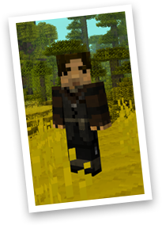
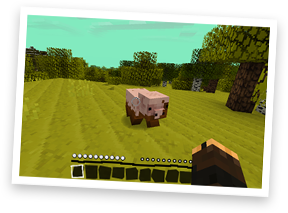
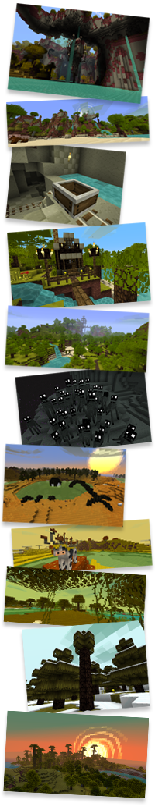

About Jolicraft
|  |
My name is Jolicoeur, so I called it Jolicraft. It's pronounced
"Jolly Craft" by the way. My name means "Happy Heart", so I guess
Jolicraft means "Happy Craft". So maybe I should have called it
HappyCraft, because I'm generally quite happy. But I'm not always happy.
Sometimes I run out of wine. Sometimes there's no hot water for my
bath. Sometimes when I'm changing my son's diaper, he pees on me.
Minecraft is a game about crafting the world around you. What better way
to craft the world than to craft the very stuff the world is made of? I
had a great time creating Jolicraft, it's so addictive to create
textures and see them live in your own world. I didn't really intend to
push the pack as far as I did, but damn this shit is addictive. It's as
addictive as Minecraft itself, which is saying alot.
This is Minecraft people. As with life, don't take it too seriously. A
good plentiful helping of Jolicraft will wash the dust away from your
dreary world. |
Features

· The complete package, changes almost every visual in Minecraft
· Custom swirly smoke/explosion animation
· "Andre the Wanderer" character skin included
· All terrain items
· GUI & hud
· Moody custom clouds
· All Passive mobs
· All No-So-Passive mobs
· Boat, cart, sign, sun, moon, bed, pumpkinblur, biomes, et cetera!
· Custom animated water, lava, sky colour, fog colour, water colour, random mobs, and more! (see 'advanced installation' below)
Installation Instructions
 Easy Installation:
1.
Easy Installation:
1. Download the jolicraft zip using the download button above.
2. Start Minecraft.
3. Select "Options", and then select "Resource Packs".
4. Select "Open Resource Pack Folder".
5. Minecraft's Resource pack folder will open. You must drop the jolicraft zip in this folder.
6. Go back to Minecraft. You'll now see Jolicraft in the Resource pack list. Select it!
7. Be sure to check back often for updates! I add new stuff all the time.
Flavours:
To apply any of the Jolicraft flavors, you must enable both normal
Jolicraft and the flavour pack in the Resource Packs screen. Be sure to
arrange the order of the packs so that the flavor is ABOVE the normal
Jolicraft pack.
Frequently Asked Questions
Why did you make this 16x16? Wouldn't it be awesomer if it was 32x32 or 128x128 or 1080x1080?
I love 16p texture packs. It seems the perfect resolution to match the
style of Minecraft. The purposefully crude low-res pixel crafting nature
of the game was simply made for 16x16 textures, anything more just
feels weird - like drinking red wine while eating hotdogs. Which Notch
does every morning at the breakfast table. Pixels are beautiful my
friend, and in a grid of 16x16 they're damn near perfection.
Can you please add more sidegrass?
Let me explain why this is almost no sidegrass on Jolicraft dirt. I like
sidegrass in many texture packs. Sometimes it works and looks great for
the type of grass & dirt they've created. But Jolicraft dirt is
different. It's firm and scoopable. The grass is a thin layer on top of
the dirt, so more sidegrass makes no sense as it either makes the grass
layer feel thicker than I want or it makes the thin grass all droopy.
Think of my dirt like cake with icing on top, so when you scoop through
it the grass doesn't instantly hang down the side, it stays firm. And
the grass overhangs just a tiny bit to cast a slight shadow down the
side of the dirt. It's that crisp edge that makes Jolicraft dirt
different from other dirt. It's not that I'm against sidegrass in
general, just sidegrass in Jolicraft.
I asked you to change a texture and you didn't. What gives?
I'm sorry. You had good intentions in suggesting a change, but I didn't
care for it. Don't be angry! I don't care for lots of stuff that other
people like. And I care for lots of things that other folk don't like.
And I'm neutral to things that many people aren't neutral to. What a
world! Does that answer your question?
Why don't you use ad.fly to make money off Jolicraft?
I've been asked this many times. I just don't want to. Jolicraft is just
a personal project for me, it's my pleasure to make textures, to make
them available for everyone, and have fun doing it. All I ask is that
you keep a place for Jolicraft in your heart, and spread the news.
I'm making my own pack or map, and I want to use a texture from your pack. Can I?
I get lots of requests from folks asking if they can use specific
textures in their packs and maps. I don't mind if you use any of my
textures, help yourself and enjoy! But I just ask that if you do use
something I've made that you state somewhere in your thread what you
used of mine, and include a link to jolicraft.com or my thread via the
Jolicraft logo (http://www.jolicraft.com/images/logo.png). And I
STRONGLY encourage you to not rely on anything I've made. Making a few
textures doesn't take long. It's much more satisfying to create
something original than to rely on someone else's creations. Wouldn't
you agree?
What's wrong with you?
Once when I was young I pushed a toothpick into my ear and it went all
the way in and didn't come out. I've not been quite right since then.
|
 |
Forum